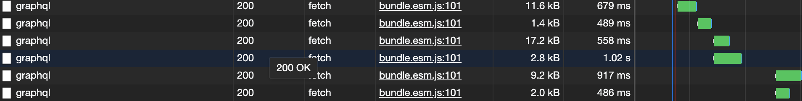
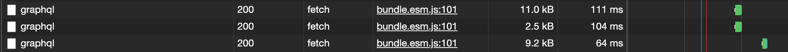
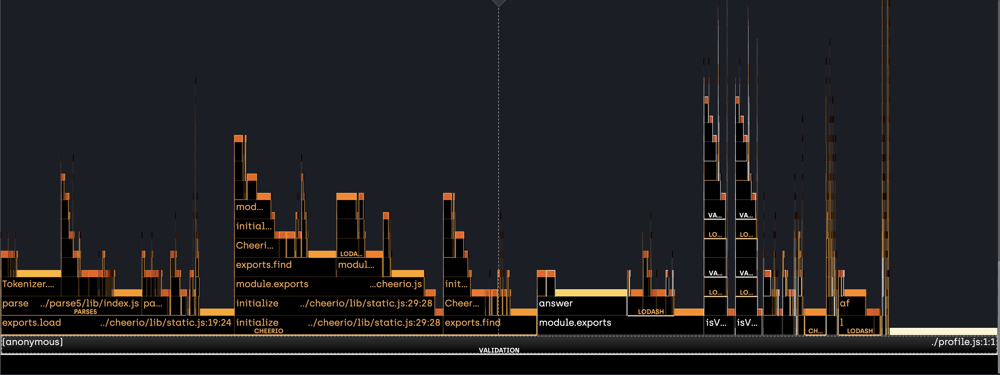
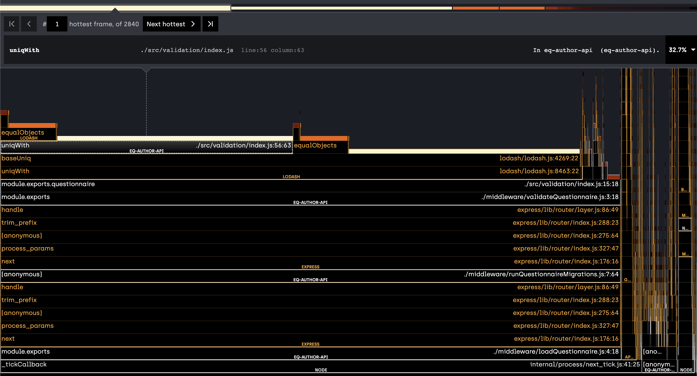
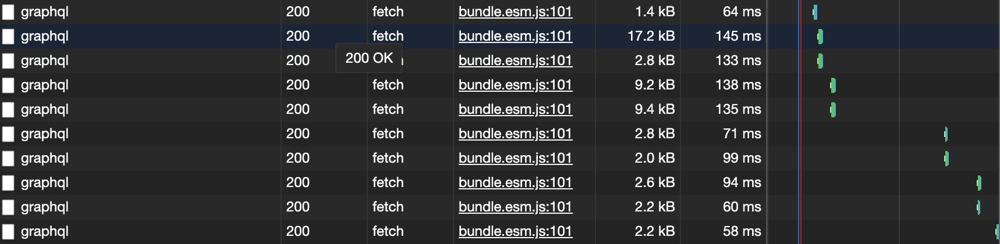

AJV Performance Benchmarking
Table of Contents
1 Issue
GraphQL responses take a long time for larger surveys. Loading the current draft of the Low Carbon Survey takes anywhere in the range of 500ms to over 1s for each response to resolve:

2 First culprit - AJV
Disabling AJV entirely results in response times resolving in approx. 100ms:

2.1 Performance analysis of AJV’s validate call
2.1.1 Benchmarking of execution time as survey size increases
To determine the contribution of AJV itself to the problem, the validate function call was called with a varying size questionnaire based on the Low Carbon Survey draft.
The final section of the survey was duplicated to take the questionnaire to 25 sections, then the benchmark was ran and sections deleted to obtain the following time-by-section-count graph:

As can be seen, AJV itself - even with our custom keywords - is only responsible for approximately 50ms of the response’s total execution time. The execution time of the validate call increases linearly with survey size.
2.1.2 Flame chart
Below is a flame chart showing where CPU time is spent during the validate(questionnaire) call in src/validation/index.js:

This shows that the majority of CPU time is spent in the cheerio dependency, followed by the getPreviousAnswersForPage utility function.
2.2 Optimising custom keywords
Disabling custom keywords entirely resulted in AJV validate times in the order of 1 - 2 ms for the 18 section draft LCS, showing that our custom keyword code was significantly slowing down execution.
Searching for getPreviousAnswersForPage in the custom keywords files showed that it was called by the validatePipingInTitle custom keyword. This file also happened to be the source of the calls to cheerio.
2.2.1 Optimising validatePipingInTitle
validatePipingInTitle used the cheerio library to parse HTML in the question title - and as can be seen by the flame graph this was a very resource-intensive process. The HTML was parsed in order to find the included piped answer IDs - if any.
const $ = cheerio.load(entityData); const pipedIdList = []; $("p") .find("span") .each(function(index, element) { pipedIdList.push($(element).data()); });
Replacing this approach with a regular expression maintained the original behaviour - piped answers are still detected to be deleted in titles - but avoided the need to use the cheerio library to parse HTML for every question in the questionnaire.
//... in file scope const pipedAnswerIdRegex = /data-piped="answers" data-id="(.+?)"/gm; //... within custom validation function const pipedIdList = []; let matches; do { matches = pipedAnswerIdRegex.exec(entityData); if(matches && matches.length > 1) { pipedIdList.push(matches[1]); } } while (matches);
Making this change and re-running the benchmark showed that the execution time for the validate call (for the 18-section LCS survey) fell to 8.65ms, a decrease of approximately 80%.
3 Second culprit - slow code in src/validation/index.js
With the above changes made and AJV performance improved, the following is a flame chart of the API server while running under load (repeatedly requesting questionnaire & pages from the UI):

As seen here, our validation code in src/validation/index.js is responsible for a huge amount of the total CPU time spent on generating responses.
The key culprit seems to be the section involving calling the lodash uniqWith function.
3.1 Optimising the validation code
src/validation/index.js calls AJV via validate(questionnaire) and then proceeeds to generate a list of error messages using createValidationError.
The part which was the performance bottleneck was that which checked for duplicated error messages, in order to remove them:
const uniqeErrorMessages = uniqWith(formattedErrorMessages, (one, two) => { const oneClone = Object.assign({}, one); const twoClone = Object.assign({}, two); delete oneClone.id; delete twoClone.id; const isDuplicate = isEqual(oneClone, twoClone); return isDuplicate; });
The function already iterates over the entire array multiple times, but the crunch point for performance (especially looking at the V8 profiling logs) seems to be the repeated use of Object.assign, causing repeated memory allocation events.
This function was removed and checking for uniqueness implemented in the first iteration over the error messages using a javascript object as a hashmap. Error objects are stringified using the minimal information required by the downstream code (dataPath and message) to produce their hash.
Checking for duplicates in this way can therefore be done in constant time (using hashmap lookup). The entire function was also refactored to iterate only once over the array of errors rather than iterating several times throughout the process.
The new approach is as follows:
const uniqueErrorMessages = {}; const formattedErrorMessages = []; for (const err of validate.errors) { if (err.keyword === "errorMessage") { const key = `${err.dataPath} ${err.message}`; if (uniqueErrorMessages[key]) { continue; } uniqueErrorMessages[key] = err; formattedErrorMessages.push(formatErrorMessage(err, questionnaire)); } }
4 Results
4.1 Effect on response times
With these two changes, the overall response times are down to a level similar to that expected with validation disabled in the server code:

This represents a reduction in total response times of up to 80-90% compared to the pre-optimised codebase.